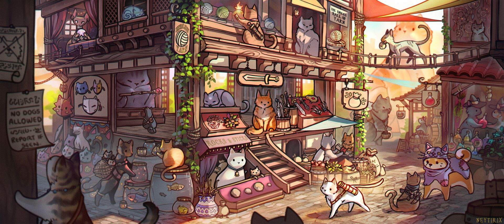

RPG: Мир, наполненный выбором и приключениями
Ролевые игры (RPG – Role-Playing Games) – это жанр, который погружает вас в огромные миры, полные приключений, интриг и невероятных возможностей. В RPG вы управляете персонажем, развивая его способности, навыки и характеристики, принимая решения, которые влияют на сюжет и окружающий мир. Это не просто прохождение линейной истории – это про создание вашей собственной истории внутри вселенной игры.
Ключевые особенности RPG:
- Развитие персонажа: Накопление опыта, повышение уровня, улучшение характеристик (сила, ловкость, интеллект и т.д.), выбор умений и навыков.
- Свобода выбора: Влияние решений игрока на сюжет, диалоги, отношения с персонажами и финал игры.
- Глубокий сюжет и мир: Проработанный лор, интересные персонажи, захватывающий сюжет, часто с элементами фэнтези, научной фантастики или исторических событий.
- Система прогрессии: Постепенное усиление персонажа, открытие новых возможностей и предметов.
- Боевая система: Разнообразные способы ведения боя, от классических пошаговых сражений до динамичных action-RPG.
Разновидности RPG:
- JRPG (Японские RPG): Часто отличаются яркой графикой, увлекательными историями, сложными системами развития персонажа и пошаговыми боями.
- WRPG (Западные RPG): Более акцент на свободе выбора и нелинейном развитии сюжета, часто с открытым миром.
- MMORPG (Многопользовательские онлайн RPG): Масштабные онлайн-миры, где вы играете вместе с другими игроками.
- ARPG (Action RPG): Сочетание элементов RPG с динамичным экшеном, акцент на боевой системе.
- Tactical RPG: RPG с пошаговыми тактическими сражениями, требующими стратегического планирования.
Примеры игр:
Классические RPG:
- The Elder Scrolls V: Skyrim
- The Witcher 3: Wild Hunt
- Baldur's Gate II: Shadows of Amn
- Divinity: Original Sin 2
Современные RPG:
- Cyberpunk 2077
- Elden Ring
- Disco Elysium
- Pathfinder: Kingmaker
JRPG:
- Persona 5 Royal
- Final Fantasy VII Remake
- Ni no Kuni: Wrath of the White Witch
MMORPG:
- World of Warcraft
- The Elder Scrolls Online
- Final Fantasy XIV Online
Это лишь малая часть огромного мира RPG. Каждый найдет в этом жанре что-то для себя, будь то захватывающие приключения, сложные стратегические решения или глубокое погружение в проработанную вселенную.